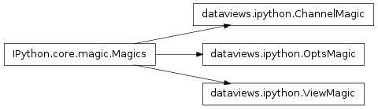

Bases: IPython.core.magic.Magics
The %opts and %%opts line and cell magics allow customization of how dataviews are displayed. The %opts line magic updates or creates new options for either StyleOpts (i.e. matplotlib options) or in the PlotOpts (plot settings). The %%opts cell magic sets custom display options associated on the displayed view object which will persist every time that object is displayed.
Given a composite view object, build a dictionary of either the ‘style’ or ‘label’ attributes across all contained atoms. This method works across overlays, grid layouts and stacks. The return is a dictionary with the collected string values as keys for the the associated view type.
Simple magic to see the full list of defined labels for the displayed view object.
Set custom display options unique to the displayed view. The keyword-value pairs in the square brackets (if present) set the plot parameters. Keyword-value pairs outside the square brackets are matplotlib style options.
Usage: %%opts <Key> [ [<keyword>=<value>...] ] [<keyword>=<value>...]
Multiple keys may be listed, setting plot and style options in this way.
Bases: IPython.core.magic.Magics
Magic to allow easy control over the display of dataviews. The figure and animation output formats, the animation frame rate and figure size can all be controlled.
Usage: %view [png|svg] [webm|h264|gif[:<fps>]] [<percent size>]
Only display the (approximately) middle frame of an animated plot